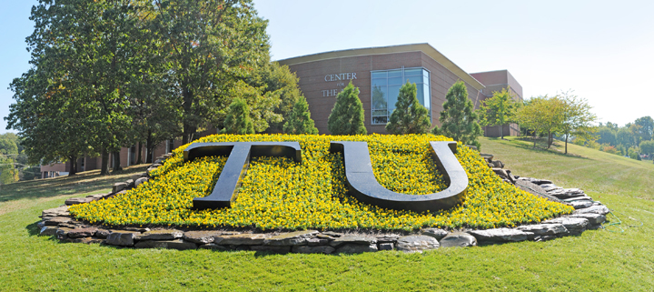
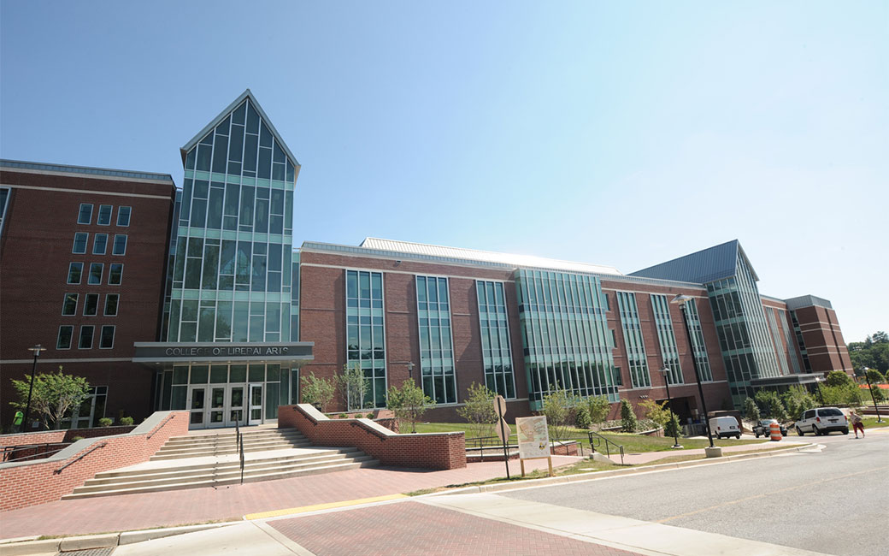
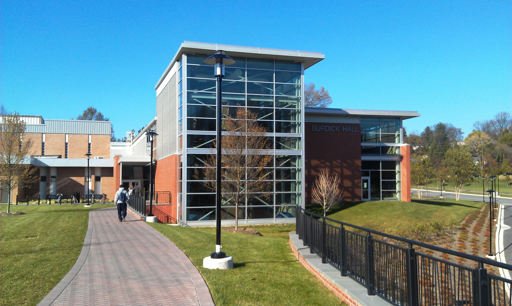

Iowa State University
Iowa State University is a four-year public higher education facility. Founded in 1858 as Ames Agricultural College, ISU has grown over the years to incorporate a large range of fields across a variety of disciplines. Computer Science is in the College of Liberal Arts and Sciences.
I transferred to ISU in the fall of 2014. I the foremost reason I chose ISU was the academic rigor. Iowa State has an excellent computer science program; At ISU, I felt I would be challenged and gain knowledge to help me become a fully-fledged developer. This prediction has turned out to be largely correct. Classes like C/C++ Development and Databases have taught me concepts instrumental to both computer science and software development. Furthermore, the large size of ISU allows for ample opportunity through extracurricular activities. Groups like Computer Science and Engineering Club and events like HackISU have helped me grow in ways I could not have achieved by academics alone. This is all without mentioning ISU’s excellent career services, which have allowed me to gain internships and my first job out of college. I graduated Iowa State in May of 2017 with Cum Laude distinction.
Lafayette College
Lafayette College is a four-year higher education facility. Founded in 1826 in honor of the legendary general of the same name, Lafayette has consistently top the U.S. News and World Report rankings for top Liberal Arts Colleges. Lafayette has a student population of 2,300. Lafayette puts the entirety of their focus into undergraduate studies, and , as such, does not offer graduate programs.
I first began attending Lafayette the fall of 2012, after my graduation from high school. In typical eighteen year old fashion, I thought I had it all figured out; I was confident that Lafayette would live up to my wildest expectations and I would graduate after four years with a smile on my face. In typical eighteen year old fashion, I was hilariously wrong. Lafayette was, for a myriad of reasons, a horrible fit for me. While I didn’t want to admit it at first, by the end of my sophomore year it became that my lack of passion in regards to my undergrad experience would hinder my performance moving forward. I transferred (in good academic standing) to Iowa State University the following semester.
Towson University
- 
-

- 
- 
Towson University is a four-year higher education facility located in Towson, Maryland. Founded in 1866, Towson has strived to bring affordable education to the citizens of Maryland. As a state school of Maryland, Towson incorporates a large amount of disciplines into its curriculum. Engineering, however, is not offered at Towson.
Unlike Iowa State and Lafayette college, I really didn’t know what to expect for my time at Towson when I enrolled in Spring of 2013. The only thing I did know is that I needed to get away from Lafayette. The college that I thought would be my home for four wonderful years quickly turned into a prison that I desperately needed an escape from. Towson, with credits that would be able to transfer back to Lafayette, was good enough. However, my time at Towson had a number of pleasant surprises that, while not academic in nature, had a profound effect on me going forward. To put it quite simply, Towson University was my first experience with a culture different from that of Lafayette and my hometown. Towson, an affordable state university, attracted a much different set of people with a much different set of values than my 60k-a-year private college. I felt that there was a lot to learn in terms of work ethic, understanding different walks of life, and the massively underrated skill of having a good attitude towards life in general. Most importantly, Towson made me realize just how much I could grow if I simply opened my mind to the road less traveled. While I did not end up staying at Towson, my time there shaped what I look for in an education and career in ways that cannot be understated.
Clubs
88.9 FM: KURE is Iowa State's very own alternative music radio station. In 2014, I served on the music review committee. Our job was to review albums both purchased and sent into KURE, ensure they meet FCC standards, and assign them a subjective quality score. Membership in this club also came with access to the club box account. The account was filled with new music to review. The end result was that I ended up broadening my musical pallet quite a bit.
PrISUm is Iowa State's very own championship-winning Solar Car team. During 2014 and 2015, I was a member of the IT group. The IT group's reponsibilties initially included setting up a cluster computing system for the mechanical team, configuring version control systems across PrISUm's computers, standardizing software configurations, and deploying a new version of the team server. I ended my PrISUm membership Fall 2016 so as to better focus on my internship search.
As part of my internship at Clearwater Analytics, I had the pleasure of having an Officer of CSE as my roommate. CSE is at a transformative state in its History. Over the summer, I was informed about CSE descisions as they occured.I attended CSE meetings during the fall semester of my final year at Iowa State. There has been a big push towards career prepardness. However, my attendance tapered off once I lined up a job after graduation
Iowa State History Club is a student organization dedicated to the discussion and promotion of history among the greater Iowa State University community. While the president does have to be a history major, all majors are welcome and encouraged to join. As an officer of History Club, I was in charge of designing the format of each meeting, as well as working with similar clubs and organizations to plan events together.
Courses
Simple course explaining the introduction to programming using C++ as a learning language
Introduction to object-oriented programming and Java. Programming techniques such as debugging, I/O , and error handling covered.
Overview of essentail programming concepts such as sorting,lists,trees,sets,maps,and graphs. Discussion of runtime and memory complexity using O-n notation, as well as average-use case
Introduction to logical operations and associated hardware used in computer engineering. Content touches logical gates, MUXs, Adders, etc. and ends with an overview of ALU operations
In-depth focus on software development outside of academia. Students were divided up into teams and competed to develop an application for the another (non-CS) professor. QT with C++ was used for this application.
Focused on C and C++ development. Some UML design patterns taught to facilitate projects. Required to use C/C++ in a number of projects designed to mimic realistic,real world, use cases
Course in discrete math geared towards computer science majors. Focus on proofs, with special focus taken towards proofs by induction
Covered the different types of language, and the parsing/grammer that defines them. In the process, students were required to implement a basic language using Racket
Course covered large variety of material related to CPU performance. Subjects include CPI,MIPS,Assembly Code, Single and Multicycle paths, and cache performance.
Overview of ER databases, along with specific implementation and query lanaguage. Projects included experience in SQL, XQuery, and Neo4j
Students were asked to consider the defining themes of the South, and how they changed over the course of the end of the 19th through the 20th century. Specific focus on reconstruction and the factors leading to the civil rights movement
Basic english course designed for college freshman to prepare them for writing in a university enviornment
Course designed to teach upper classmen a simple overview of rhetorical arguments and how to apply them to a variety of instances. Special care was taken to ensure application in engineering and mathematical contexts.
Creative writing in the confines of reality was practiced extensively in this course. Students were required to write three short stories along with numerous in class excersises. All of these pieces were graded and formed the core of our final letter grade for this course.
Half-semester course required to be taken by every student at Iowa State before graduation.
Students were asked to consider the defining themes of several eras of american history. Course material included both events relevant to America as a whole and events that placed overarching themes in the local context of Balitmore,MD.
Introduction to humankind through the classical era. Students begin in the near-east at the dawn of civilization and continue studying the same reigion through the fall of the western Roman Empire in the late 5th century AD
Overview of different forms of logic, with focus on aristotle and boolean
Introduction into historical thinking via history of the world. Starts at the end of the classical era and moves through the dawn of globalisation
Math course taken at lafayette consistering of advanced calculus. Required for Computer Science Majors
Introduction level chemistry course. Students went over the basics of elements, molecular bonds, and other freshmen-level subjects
Science Elective taken at Iowa State University. Students were given extensive overview of nutrition, FDA regulations, preservation techniques, and food saftey.
Public speaking course required for Iowa State University. Students were divided intro groups of 5 and made to give both indvidual and group speeches and presentations.
Statistics Course taken at Iowa State University. Students were given an in-depth education on statistics and the math behind them.
Science elective taken at Iowa State University. Students were given overview of weather diagnostic tools, weather related events, and how climate change effects existing weather patterns.
Students were given in depth look of near-eastern economic history from the rise of Sumeria to the fall of Western Rome
Students were tasked with learning in-depth information of england from the reign of Henry VIII through the Glorious Revolution
Students were education on America after the events of the French and Indian war through the American Revolution. Special attention was given to troop movements and military strategy.
Students were given an overview of operating system functionality, as well as asked implement a thread manager and page fault handler. Extensive time was taken going over threading in both theoretical and practical implementations
An in-depth look at different software testing techniques and their philosophies. At the end of the year, students were put into groups and assigned a report on an advanced testing framework.
A discussion-based course covering violence in Latin American culture from the Tupac Amaru Rebellion through the dirty wars. Specific attention was given to nontraditional forms of violence and disapearences in the mid-late 20th century.
Discussion-based class where students were asked to consider the affects of recent technological advancements on society. specific topics include healthcare, net neutrality, income inequality, and consumer culture.
Discussion-based class where students were asked to consider the affects of recent technological advancements on society. specific topics include healthcare, net neutrality, income inequality, and consumer culture.
Course covering different computing models. Course begins with a brief overview of DFAs and proceeds to run through NFAs, Context Free Grammars, and ends with Turing Machines
A course focused on advanced Algorithms beyond what a student would learn in Computer Science 228. Information studied include dynamic programming, Advanced Graph Techniques, and Divide and Conquer Algorithms. Projects available on GitHub
An in-depth analysis of C code using graph based techniques. Said techniques were used to find vulnerabilities, with discussion on how to exploit them.